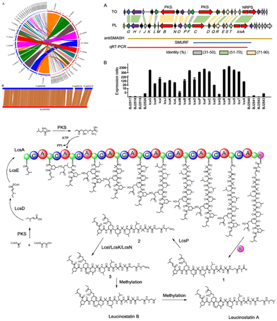

蔬菜所发现一种脂肽抗生素生物合成途径
近日，中国农业科学院蔬菜花卉研究所谢丙炎研究员领衔的蔬菜病害防控创新团队与中国科学院微生物研究所合作，在淡紫拟青霉生物防治作用机制的研究方面取得了重要突破，解析出了淡紫拟青霉中最重要的脂肽类抗生素leucinostatins的生物合成途径，相关结果在7月14日发表于国际知名的病原菌刊物《PLoS Pathogens》。
 据介绍，淡紫拟青霉是农业上重要的生物防治真菌，对于植物线虫和多种病虫害具有高效生防作用，次级代谢产物是生物防治中重要的活性因子。上世纪70年代日本科学家从淡紫拟青霉发酵液中分离到一种最重要的脂肽类抗生素leucinostatins，至今为止，对于其生物合成基因簇及调控机制尚未阐明。
据介绍，淡紫拟青霉是农业上重要的生物防治真菌，对于植物线虫和多种病虫害具有高效生防作用，次级代谢产物是生物防治中重要的活性因子。上世纪70年代日本科学家从淡紫拟青霉发酵液中分离到一种最重要的脂肽类抗生素leucinostatins，至今为止，对于其生物合成基因簇及调控机制尚未阐明。
该研究首先对两个淡紫拟青霉菌株进行基因组测序，通过比较基因组学分析，揭示了淡紫拟青霉基因组的一般特征；基于全基因组次级代谢产物合成基因分析结合候选基因的分子遗传敲除，确定了leucinostatins的生物合成基因簇，解析了其生物合成途径，并证明簇内转录因子的过表达使leucinostatins的产量提高1.5倍；并发现淡紫拟青霉leucinostatins除具有杀线虫活性外，对马铃薯晚疫病菌也具有抑制活性。
文章链接：http://journals.plos.org/plospathogens/article?id=10.1371/journal.ppat.1005685
该研究首先对两个淡紫拟青霉菌株进行基因组测序，通过比较基因组学分析，揭示了淡紫拟青霉基因组的一般特征；基于全基因组次级代谢产物合成基因分析结合候选基因的分子遗传敲除，确定了leucinostatins的生物合成基因簇，解析了其生物合成途径，并证明簇内转录因子的过表达使leucinostatins的产量提高1.5倍；并发现淡紫拟青霉leucinostatins除具有杀线虫活性外，对马铃薯晚疫病菌也具有抑制活性。

该项目由中国农科院科技创新工程和大宗蔬菜产业技术体系资助，文章的通讯作者为谢丙炎研究员和尹文兵研究员，第一作者为王刚、刘志国和林润茂三位博士。（通讯员 李海芬）文章链接：http://journals.plos.org/plospathogens/article?id=10.1371/journal.ppat.1005685